Fix Current Bikes
From tune-ups and flat fixes to full rebuilds, we’ll keep your wheels spinning smoothly.
Services menu
From tune-ups and flat fixes to full rebuilds, we’ll keep your wheels spinning smoothly.
Hand-crafted restorations, mixing vintage charm with modern performance.
Got a retro bike from the 80s or 90s collecting dust? We’ll buy it and give it a second life.
Need your dream ride on another island? We can ship to outer islands. Shipping fees apply.
Looking for something specific? Call us! We can help track down those specific parts.
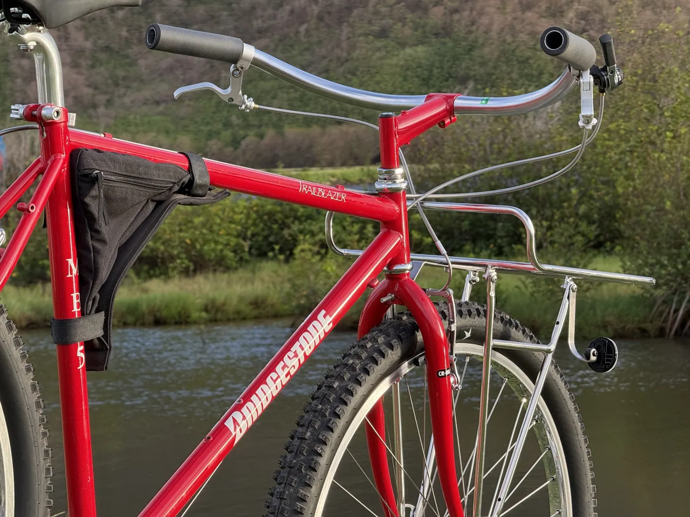
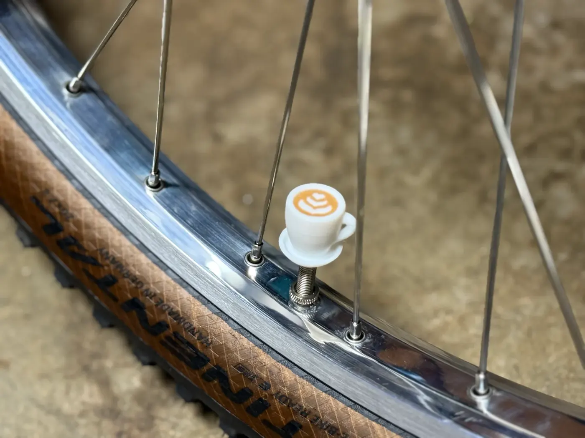
Pricing menu
A bike evaluation and discussion of the parts and work needed.
A full refresh to get your bike riding smoothly again.
Full frame-up rebuilds and specialty conversions, customized to match your ride style.
Café cruiser, commuter, townie, single-speed or fixed-gear conversions.
Discuss your build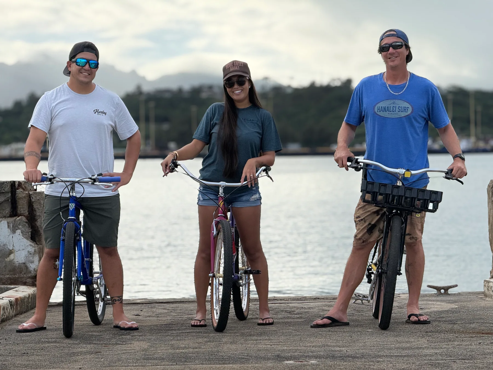
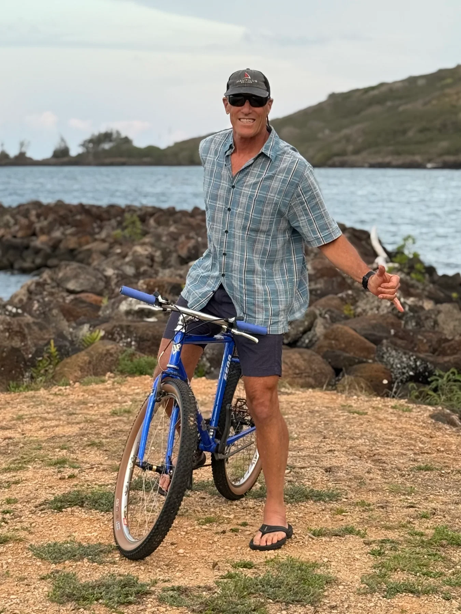
Getting started
At Kuahiwi Care and Repair, we keep things simple and personal.
Every bike is handled directly by Shaydon, the owner and sole operator of the shop.
Here’s how the process works:
Call, text or email Shaydon with the details of what you need — whether it’s a repair, restoration or custom build.
Based on your request, Shaydon will provide a clear estimate before getting started.
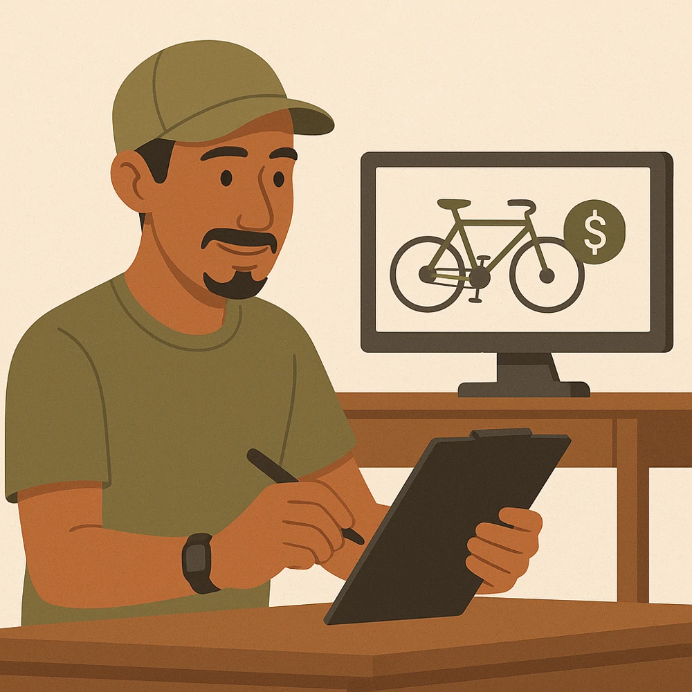
You can bring your bike directly to the little shop in Līhuʻe or arrange to have it shipped in. Outer island shipping is accepted.
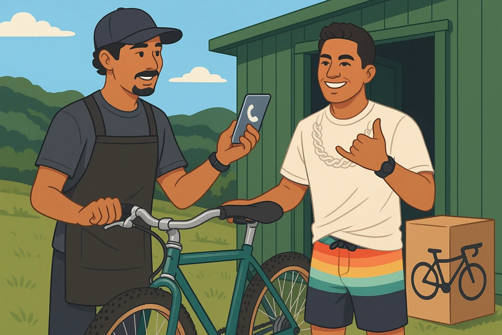
Shaydon personally fixes, restores or builds your bike with care and attention to detail.
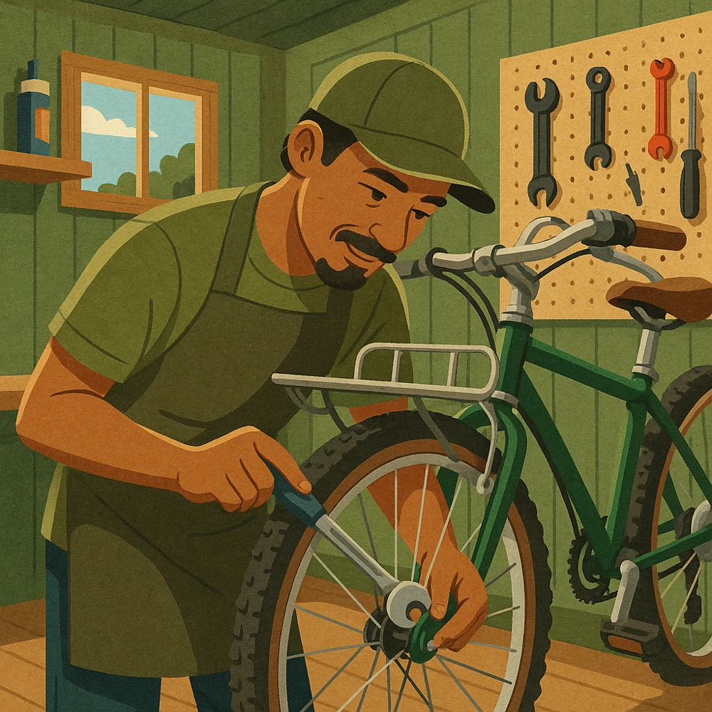
Once your project is complete, you’ll be notified that your bike is ready — tuned, polished and set to roll.
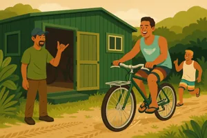
Because Kuahiwi Care and Repair is a one-person shop, only a limited number of projects can be taken on each month. Reaching out early helps secure your spot and ensures your bike gets the attention it deserves.
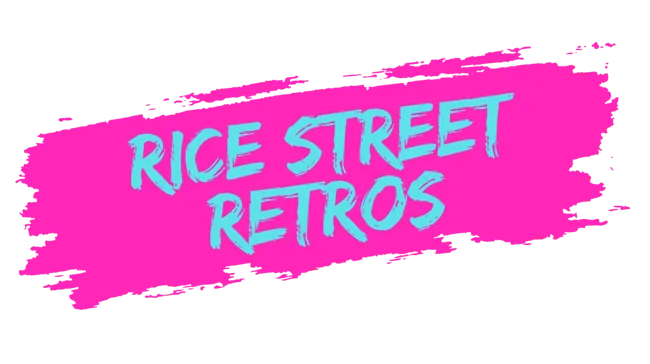
At Kuahiwi Care & Repair, we have a deep love for vintage bikes.
Rice Street Retros is our passion project — where we bring classic rides back to life through custom builds, restorations, and hard-to-find parts.
Ready to start your build?
Learn more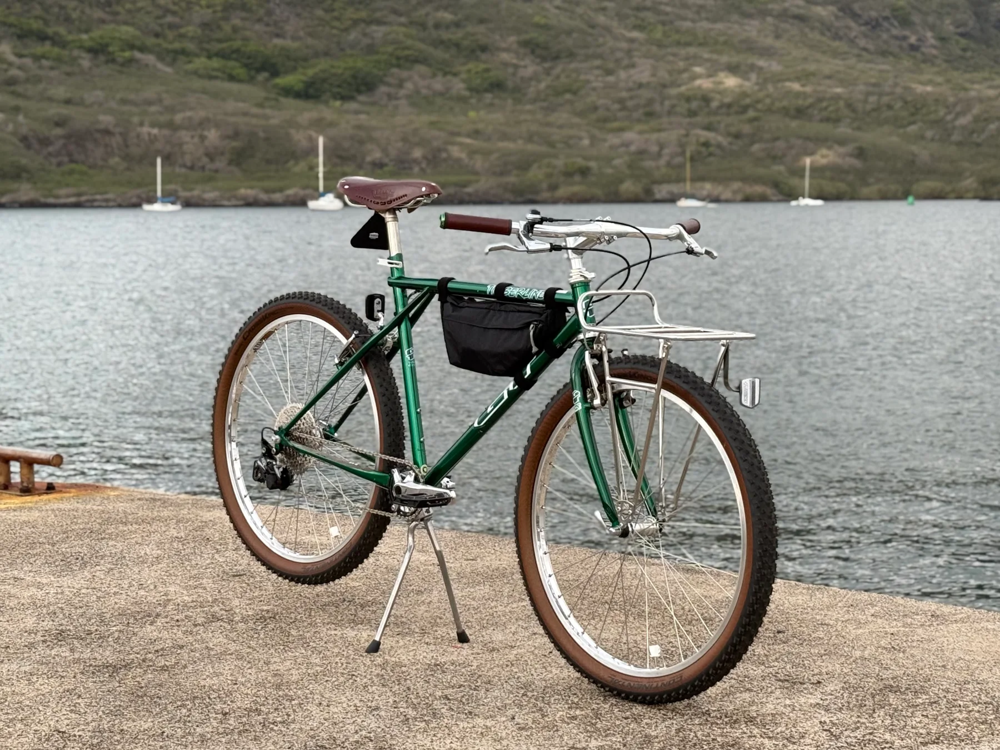
About us
Kuahiwi Care and Repair began in 2024 out of a small bike shack in Līhuʻe, Kauaʻi. Founded and run by Shaydon W. K. Moises, the shop was created out of a lifelong love for bikes and a desire to give retro rides from the 80s and 90s a new lease on life. What started as a personal passion for collecting and fixing up vintage frames quickly grew into a local business dedicated to restoration, custom builds and reliable repairs.
Shaydon personally handles every repair, restoration and build that comes through the door, ensuring each project receives the attention and craftsmanship it deserves. Because of this hands-on approach, the number of bikes he can take on each month is limited — making it important to reach out early if you’re interested in getting on the schedule.
The shop focuses on preserving history and encouraging an active lifestyle. Every bike tells a story, and the mission is to keep those stories rolling by bringing old frames back to life and back onto the streets. Whether you want to sell your old bike, restore a treasured ride or commission a custom build, you’ll work directly with Shaydon.
At its core, the shop is about community, health and the simple joy of being out on two wheels. Shaydon’s goal is to help people reconnect with cycling, enjoy Kauaʻi’s beauty and live active, healthy lives with a ride they can be proud of.
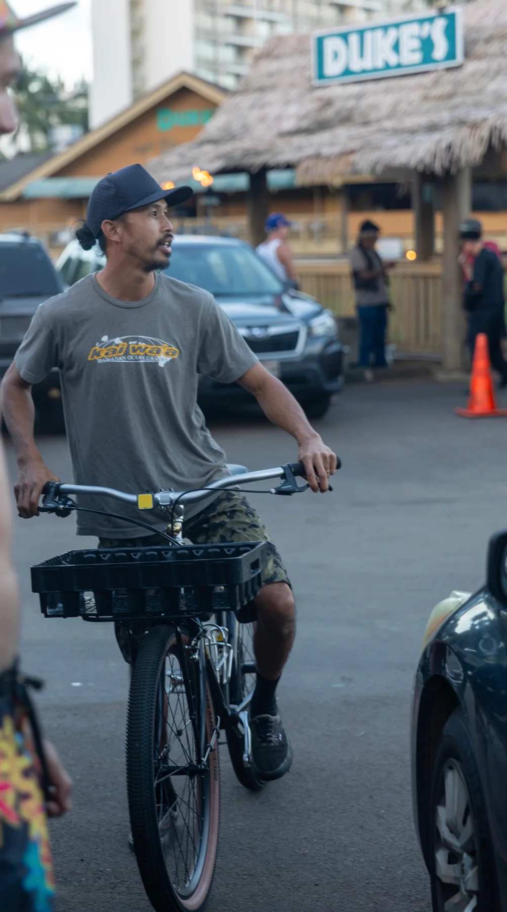
FAQ
General
Walk-ins are welcome. Appointments can help shorten your wait during busy weeks. Reach out to Shaydon before visiting to confirm availability.
Usually 2–3 days, depending on parts and workload. Same-day service may be possible for small repairs. Confirm the current turnaround with Shaydon.
Cash, credit card and Venmo.
Not at this time. For e-bike questions, contact Kauaʻi Cycle at www.kauaicycle.com.
Yes. Labor still applies, and compatibility is checked before installation.
Brake and driveline adjustments, wheel truing, bearing adjustments, bolt checks, a wipe-down, lubrication, tire inspection and inflation, and a safety check. See the service list for details.
There is a 14-day return window if something feels off after a repair. Contact Shaydon to discuss the issue and confirm what is covered.
The shop recommends every 6–12 months for casual riders and every 3–6 months for frequent riders. If something feels or sounds off, reach out sooner.
Yes. Shaydon can help source parts, build from a frame or upgrade your current bike. Pricing depends on components and time.
Your bike. Accessories such as bags, child seats and lights can stay on unless you prefer to remove them.
Refurbished bikes may be available. Call to ask about current stock.
Tube and tire installs are usually quick; usually around 10–15 minutes, depending on the queue. Check availability first.
Vintage bikes are welcome. Some need more labor or harder-to-find parts; Shaydon can evaluate the bike and explain your options.
A free inspection and estimate are available before work starts. Contact Shaydon with details about your bike.
Pickup and delivery are available for an additional fee depending on location. Ask Shaydon about availability and a quote.
No matching questions. Try another word or contact Shaydon.